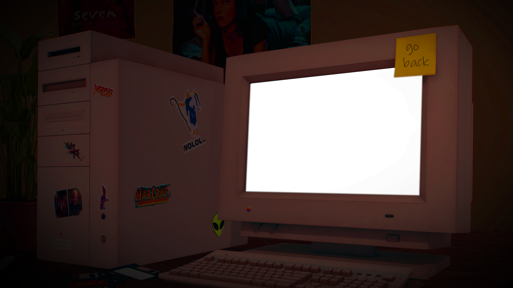

How Soon Is Now? - LINK - Home header and some widgets
Ribo.zone - LINK - Dithering aesthetic
Medjed - LINK - Win98 & font style
These 3 websites heavily influenced the design and layout of my home page, they are all amazing sites that you should check out!
CrimsonPro - Main Font
MS UI Gothic - Win98 elements (Windows only)
PixelMPlus - Win98 elements (Everywhere else)
VirtualObserver's comment widget - LINK
Frills comment widget moderation tweak -
LINK
dabamos 88x31 button collection - LINK
88x31 Button Maker - LINK
Aseprite - LINK - Drawing buttons and icons
Betty's Graphics - LINK - 90s web aesthetic
backgrounds
lmas - LINK - CRT effect
